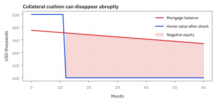
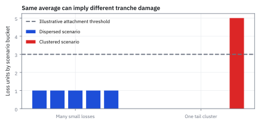
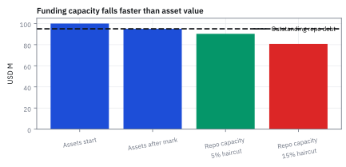
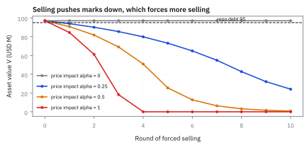
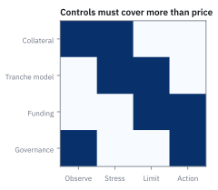

22.5 What 2007–2008 Actually Broke
ตามรอยเหตุพังตั้งแต่ underwriting ถึง forced sale แทนการโทษสูตรเดียว
ธนาคารลงทุนถือสินเชื่อ structured credit \$100 ล้าน ด้วยทุนตัวเอง \$5 ล้าน และกู้ repo \$95 ล้าน (leverage 20 เท่า) หากสินทรัพย์ราคาตกเพียง 5% ทุนของธนาคารจะเหลือเท่าไร?
เฉลย: ทุนเหลือ \$0 (หมดตัว 100%) เพราะขาดทุน \$5 ล้าน กินทุนทั้งก้อนทันที และหากเจ้าหนี้ขึ้น repo haircut จาก 5% เป็น 15% ธนาคารต้องหาเงินสดมาโปะช่องว่างถึง \$14.25 ล้าน มิฉะนั้นจะถูกบังคับขายสินทรัพย์ล้างพอร์ต
ศัพท์ของ failure chain
- Fair Isaac Corporation (FICO) score
- คะแนนเครดิตผู้บริโภคในสหรัฐฯ ที่สรุปประวัติสินเชื่อ ใช้แบ่งคุณภาพ underwriting และติดตาม vintage deterioration
- collateralized debt obligation (CDO)
- โครงสร้างที่จัดชั้น credit loss ของ collateral portfolio ใช้ติดตามว่า loss จาก mortgage ถูกส่งต่อไป tranche ใด
- probability of default (PD)
- ความน่าจะเป็นที่ borrower หรือ issuer default ใน horizon ที่ระบุ ใช้สร้าง scenario frequency ไม่ใช่คำทำนายรายชื่อที่จะผิดนัด
- loss given default (LGD)
- สัดส่วนของ exposure ที่สูญเสียหลัง default และ recovery ใช้วัด severity ของ credit loss ในหน่วย fraction
- exposure at default (EAD)
- ยอด exposure เมื่อ default เกิด ใช้แปลง PD และ LGD เป็น expected loss หน่วย USD
- expected loss (EL)
- ค่าเฉลี่ยของ credit loss ภายใต้ scenario probability ใช้เป็น baseline ก่อนเพิ่ม stress และ tail dependence
- United States (US)
- ตลาดและกรอบตัวอย่างของบทนี้ ใช้ย้ำว่าเงินทุกตัวเป็น USD และกติกาสินเชื่ออาจต่างกันตามเขตอำนาจ
- subprime mortgage
- mortgage ที่ borrower มี credit quality อ่อนกว่า prime segment ใช้เป็น exposure ที่ sensitive ต่อ underwriting และ house-price stress
- loan-to-value (LTV)
- loan balance หารด้วยมูลค่าบ้าน ใช้วัด equity cushion ของ borrower; LTV สูงทำให้ price decline กระทบ incentive และ loss severity มาก
- delinquency
- การชำระเงินล่าช้าตามเกณฑ์ ใช้เป็น early performance signal แต่ไม่เท่ากับ ultimate default
- mark-to-market
- การปรับมูลค่าตามราคา/quote ปัจจุบัน ใช้รับรู้ P&L และ collateral need ก่อน cash loss สุดท้ายเกิด
- repo haircut
- ส่วนลดจาก market value ของ collateral ที่ lender ไม่ยอมปล่อยกู้ ใช้ป้องกัน price risk ของ funding provider
- leverage
- การใช้ debt ขยาย exposure ต่อ equity ใช้เพิ่มผลตอบแทนได้แต่ทำให้ price shock กระทบทุนแรงขึ้น
- fire sale
- การขายสินทรัพย์อย่างเร่งด่วนเพื่อหา liquidity ใช้ได้ราคาแย่และกด mark ของผู้ถือรายอื่น
- wrong-way risk
- ความเสี่ยงที่ exposure แย่ลงพร้อมกับ counterparty หรือ collateral อ่อนลง ใช้จับการพึ่งพากันใน stress
- model risk
- ความเสี่ยงจาก model, parameter, data หรือ use case ผิด ใช้บังคับให้มี challenger, reserve และ limit
- teaser rate
- ดอกเบี้ยช่วงแรกที่ต่ำเป็นพิเศษของ adjustable-rate mortgage ก่อนปรับขึ้นตามดัชนี ใช้ดึงผู้กู้ที่รายได้ไม่พอจ่ายดอกเบี้ยจริง
สัญกรณ์และหน่วย
| สัญลักษณ์ | ความหมาย | หน่วย |
|---|---|---|
| $H_t$ | house price index หรือมูลค่าบ้าน representative | USD หรือ index |
| $\mathrm{LTV}_t$ | loan balance หารด้วย current house value | ไม่มีหน่วย |
| $PD,LGD$ | default probability และ loss-given-default | ไม่มีหน่วย |
| $V_t$ | market value ของ structured asset | USD |
| $h_t$ | repo haircut | ไม่มีหน่วย |
| $E_t,D_t$ | equity และ debt funding | USD |
| $\lambda_t$ | leverage ratio assets over equity | เท่า |
| $\rho$ | ตัวเลขตัวเดียวที่ credit model ใช้บอกว่าลูกหนี้จะล้มพร้อมกันมากแค่ไหน | ไม่มีหน่วย |
| $e_0,\ d,\ B_t$ | เงินดาวน์เป็นสัดส่วนของราคาบ้าน สัดส่วนที่ราคาบ้านลด และยอดหนี้ | ไม่มีหน่วย และ USD |
| $N_t$ | เงินที่ได้คืนสุทธิหลังขายบ้านและหักค่าใช้จ่าย | USD |
| $G_t,\ x_{\min}$ | funding gap และสินทรัพย์ที่ต้องขายน้อยที่สุดเพื่อปิดมัน | USD |
| $\alpha,\ q_t$ | แรงกดราคาจากการขาย และดัชนีแรงกดดันของรอบที่ $t$ | ไม่มีหน่วย |
| $g_t$ | funding gap เทียบกับมูลค่าสินทรัพย์ก่อนตัดขอบ | ไม่มีหน่วย |
ที่มาที่ไป: บทที่เขียนขึ้นเพื่อไม่ให้ทำผิดซ้ำ
หัวข้อนี้ไม่มีสูตรใหม่ เพราะสิ่งที่พังในปี 2008 ไม่ใช่คณิตศาสตร์
สมการทุกสมการในบทที่ผ่านมาถูกต้องตามที่มันอ้าง สิ่งที่ผิดคือข้อสมมติที่ใส่เข้าไป และการที่ข้อสมมติเหล่านั้นไม่ถูกสื่อสารขึ้นไปถึงคนที่ตัดสินใจ
รูปแบบที่เกิดซ้ำมีอยู่ไม่กี่ข้อ คือการใช้เงินกู้เพิ่มขึ้นเงียบ ๆ การพึ่งพาสภาพคล่องที่หายไปพร้อมกันทั้งตลาด การเชื่ออันดับเครดิตที่คำนวณจากแบบจำลองที่ไม่มีใครตรวจ และคำพูดว่าครั้งนี้ต่างจากเดิม
หัวข้อนี้จึงเป็นบทที่มีค่าที่สุดสำหรับคนที่จะไปทำงานจริง มากกว่าเทคนิคใดในเล่ม เพราะมันสอนวิธีตั้งคำถามกับเครื่องมือที่ตัวเองใช้อยู่
สี่ต้นเหตุตามสไลด์ mortgage ของคอร์ส
ข้อแรก สินเชื่อจำนวนมากปล่อยให้คนที่ประวัติเครดิตแย่ หรือ subprime และคุณภาพจริงของผู้กู้ถูกปิดบัง ส่วนมากเป็น adjustable-rate mortgage ที่เริ่มด้วย teaser rate ต่ำ ๆ แล้วปรับขึ้นจนผู้กู้จ่ายไม่ไหว
ข้อสอง securitization ต่อยอดเป็น CDO และ CDO ที่ทำจาก asset-backed security (ABS) ซึ่งซับซ้อนเกินกว่าความสามารถในการทำ model ขององค์กร ข้อสาม moral hazard ทั้ง broker, บริษัทจัดอันดับ และธนาคารลงทุน ข้อสี่ การกำกับไม่พอ การบริหารความเสี่ยงล้มเหลว และธรรมาภิบาลแย่
คำอธิบายที่แม่นกว่า “สูตรเดียวพัง”
วิกฤต 2007–2008 ไม่ได้เริ่มและจบที่สมการเดียว คนกู้คุณภาพต่ำ, ราคาบ้านลด, การผิดนัดเพิ่ม, และสินทรัพย์ที่ดูขายได้กลับขายยาก—แต่ละชั้นส่งแรงต่อกัน.
เงินกู้ระยะสั้นและ leverage เปลี่ยนขาดทุนบนกระดาษให้กลายเป็นความต้องการเงินสดทันที การขายเพื่อหาเงินสดกดราคา แล้วบังคับคนอื่นขายต่อ
บทเรียนสำหรับ quant คือ model อาจคำนวณถูกภายใต้ assumptions ของมัน แต่ยังไม่พอสำหรับการตัดสินใจ ต้องถามว่าอะไรจะขยับพร้อมกัน, ใครต้องหาเงินสดพรุ่งนี้, และตลาดจะยังมีราคาที่ซื้อขายได้ไหมเมื่อ margin มาถึง
มายากล CDO-Squared: การจัดชั้นซ้ำเพื่อสร้างตราสารความเสี่ยงต่ำจำแลง
ในยุคก่อนปี 2008 วาณิชธนกิจพบอุปสรรคสำคัญในการขาย mezzanine tranche ของสินเชื่อซับไพรม์ เพราะชั้นเหล่านี้มีความเสี่ยงปานกลาง ไม่ปลอดภัยพอสำหรับกองทุนที่ต้องการสินทรัพย์มั่นคงสูงสุด และให้ผลตอบแทนไม่สูงพอจะดึงดูดนักลงทุนที่ชอบความเสี่ยงสูง ทางการเงินจึงประดิษฐ์ CDO-squared ($CDO^2$) ขึ้นมา โดยนำ mezzanine tranche จากข้อตกลง CDO นับร้อยดีลมารวมกันเป็น pool ใหม่ แล้วนำมาแบ่งชั้นซ้ำอีกรอบ
บริษัทจัดอันดับความน่าเชื่อถือใช้แบบจำลอง Gaussian copula ในการประเมินความเสี่ยง โดยสมมติว่า correlation ระหว่างพอร์ตแต่ละพอร์ตอยู่ในระดับต่ำ แบบจำลองจึงคำนวณว่าโอกาสที่ mezzanine tranche ทั้งร้อยดีลจะพังพร้อมกันแทบเป็นไปไม่ได้เลย ทำให้สามารถออก senior tranche ของ $CDO^2$ ในสัดส่วนสูงถึง 70% ถึง 80% โดยได้รับอันดับเครดิตระดับสูงสุด ทั้งที่สินทรัพย์หนุนหลังทั้งหมดคือหนี้ชั้นรอง
ความเป็นจริงที่แบบจำลองมองข้ามคือ ทุกพอร์ตล้วนผูกกับราคาบ้านในสหรัฐฯ เหมือนกัน เมื่อราคาบ้านตกทั่วประเทศ การผิดนัดไม่ได้เกิดขึ้นแบบกระจายตัว แต่เกิดขึ้นพร้อมกันทั้งระบบ เมื่อขาดทุนของสินเชื่อบ้านแตะระดับ 7% mezzanine tranche ทั้งหมดในพอร์ตก็ถูกกินจนหมดตัวพร้อมกัน ส่งผลให้ senior tranche ของ $CDO^2$ ที่เคยได้อันดับความน่าเชื่อถือสูงสุด กลายเป็นเศษกระดาษที่สูญเงินต้นเกือบทั้งหมด
สไลด์ structured credit เล่าวิธีสร้าง: เก็บ mezzanine tranche จาก CDO 100 ตัวมารวมเป็นพอร์ต แล้วแบ่ง tranche ซ้ำ CDO² เริ่มขาดทุนเมื่อ mezzanine ข้างล่างเริ่มขาดทุน และบริษัทเดียวกันโผล่ซ้ำในพอร์ตของ CDO ต้นทางหลายตัว ความเสี่ยงจึงกระจุกกว่าที่เห็น
prospectus ของ mezzanine แต่ละตัวยาวราว 150 หน้า การเข้าใจ collateral ของ CDO² จึงต้องอ่านราว 100 × 150 = 15,000 หน้า ติดตามผลต้องใช้ code หลายพันบรรทัด และ scenario, VaR หรือ CVaR แทบ calibrate ไม่ได้ ตลาดยังต่อยอดเป็น CDO-cubed และชั้นที่ซ้อนกว่านั้น ทั้งที่ไม่มีเหตุผลทางเศรษฐกิจรองรับ
ขั้นที่ 1 — นิยามของอัตราส่วนหนี้ต่อราคาบ้าน เมื่อราคาบ้านตก
สองก้อนนี้เป็น นิยาม ของสิ่งที่เราติดตาม ไม่ใช่ผลที่พิสูจน์ ตัวเศษคือยอดหนี้ค้าง ซึ่งลดลงช้า ๆ ตามตารางผ่อนในหัวข้อ 22.1 ตัวส่วนคือราคาบ้านที่ตกไปตามสัดส่วนที่กำหนด ผลที่ตามมาคือจุดที่อันตราย: เมื่ออัตราส่วนนี้เกินหนึ่ง หนี้มากกว่ามูลค่าบ้าน การผ่อนต่อจึงไม่สมเหตุสมผลทางการเงินสำหรับลูกหนี้ และพฤติกรรมที่แบบจำลองสมมติไว้ก็เปลี่ยนไปหมด ซึ่งเป็นสิ่งที่แบบจำลองในหัวข้อ 22.2 ไม่ได้เตรียมรับมือไว้เลย
ใส่ยอดหนี้บ้าน $B_t$ และราคาบ้านวันนี้ $H_t$ หารหนี้ด้วยราคาบ้านเพื่อได้ loan-to-value (LTV)
ถ้าราคาบ้านเดิม $H_0$ ลดลงสัดส่วน $d$, ใช้ $1-d$ คูณเพื่อได้ราคาใหม่ $H_t$.
ผลลัพธ์ LTV บอกว่าหนี้ใหญ่กว่าหรือเล็กกว่าหลักประกันแค่ไหน. ราคาบ้านลด แต่หนี้ยังลดช้า LTV จึงกระโดดขึ้น.
การขยายตัวของ LTV และจุดตัดของการทิ้งบ้าน
เริ่มต้นจากเงินดาวน์เริ่มต้นสัดส่วน $e_0$ ของราคาบ้าน ทำให้ยอดหนี้เริ่มต้นคิดเป็น $1-e_0$ เท่าของราคาเดิม เมื่อเวลาผ่านไปไม่นาน ยอดหนี้ค้าง $B_t$ ยังแทบไม่ลดลงเนื่องจากโครงสร้างการผ่อนชำระในช่วงแรกตัดเงินต้นน้อยมาก หากราคาบ้านลดลงสัดส่วน $d$ เราสามารถคำนวณการพุ่งขึ้นของ LTV และจุดที่ส่วนของเจ้าของหมดไปได้อย่างแม่นยำ
เงินดาวน์ $e_0$ ทำให้หนี้เริ่มต้นเป็น $1-e_0$ ของราคาบ้าน ถ้าราคาบ้านลดลงสัดส่วน $d$ แต่หนี้ยังแทบเท่าเดิม ตัวส่วนหดแต่ตัวเศษไม่หด LTV จึงพุ่ง
LTV เกินหนึ่งทันทีที่ราคาตกมากกว่าเงินดาวน์ และส่วนทุนของเจ้าของบ้าน $E^{\rm home}_t$ เหลือศูนย์ ผู้กู้ที่ติดลบแบบนี้มีแรงจูงใจทิ้งบ้าน
ดาวน์ 5% แล้วราคาตก 20% ได้ LTV 118.75% หนี้มากกว่าราคาบ้านเกือบหนึ่งในห้า สินเชื่อที่ดาวน์ต่ำจึงเปราะที่สุดเมื่อราคาบ้านทั้งประเทศตกพร้อมกัน
ตัวอย่าง — negative equity และ LGD ของบ้านหนึ่งหลัง
คำถาม: ซื้อบ้าน \$500,000 กู้ \$475,000 หรือ LTV 95% ต่อมาราคาบ้านลดเหลือ \$400,000 ขณะที่หนี้ยังเหลือ \$465,000 ถ้าผู้กู้ผิดนัดแล้วขายบ้านได้สุทธิ \$380,000 ธนาคารเสียเท่าไร?
ของที่มี: ขั้นที่ 1 และส่วนการขยายตัวของ LTV
1. LTV วันนี้คือ 465,000 / 400,000 = 116.25% หนี้มากกว่าราคาบ้านแล้ว
2 ขาดทุนจริงคือ 465,000 − 380,000 = \$85,000
3. loss given default คือ 85,000 / 465,000 = 18.28%
ตรวจเองใน 10 วินาที: 465 − 380 = 85 พัน USD
แปลว่าอะไร: ราคาบ้านที่ตกไม่ได้แค่เพิ่มโอกาสผิดนัด แต่ทำให้เงินที่ได้คืนแย่ลงด้วย เมื่อหลายพื้นที่ตกพร้อมกัน ขาดทุนของ pool จึงไม่ใช่การโยนเหรียญที่เป็นอิสระต่อกัน
แล้วเอาไปใช้ทำอะไรได้จริงบ้าง
การเข้าใจว่าอะไรพังจริงในวิกฤติ เป็นบทเรียนที่มีค่ากว่าเทคนิคใดในเล่มนี้
ใช้ตรวจสอบแบบจำลองของตัวเองว่ามีข้อสมมติแบบเดียวกับที่พังไปแล้วหรือไม่
ใช้ออกแบบมาตรการควบคุมความเสี่ยงที่ไม่พึ่งแบบจำลองอย่างเดียว
ใช้อธิบายให้ผู้บริหารเข้าใจว่าทำไมการทดสอบภาวะวิกฤติถึงต้องทำแยกจากการวัดความเสี่ยงปกติ
Figure 22.5a — LTV พุ่งเมื่อราคาบ้านตกเกินเงินดาวน์

LTV ตามสัดส่วนที่ราคาบ้านลด สำหรับเงินดาวน์ 5%, 10% และ 20% จากสูตร $(1-e_0)/(1-d)$ เส้นประคือ LTV 100% ดาวน์ 5% แล้วราคาตก 20% ได้ 118.75%
ขั้นที่ 2 — นิยามของขาดทุนที่คาดหวัง และของที่วัดยากที่สุดในนั้น
สองก้อนนี้เป็น นิยาม ของบัญชี ไม่ใช่ผลที่พิสูจน์ บรรทัดแรกคูณสามอย่าง คือโอกาสเจ๊ง สัดส่วนที่หายเมื่อเจ๊ง และยอดที่ค้างตอนเจ๊ง จุดที่พลาดกันคือการคูณสามค่าเฉลี่ยเข้าด้วยกัน ทั้งที่สามตัวนี้เกาะกันในวิกฤติ ค่าเฉลี่ยของผลคูณจึงไม่เท่ากับผลคูณของค่าเฉลี่ย ตามที่หัวข้อ 6.5 อธิบายไว้ บรรทัดที่สองกางตัวกลางออกมา และแสดงว่ามันขึ้นกับเงินที่ขายบ้านได้จริงหลังหักค่าใช้จ่าย ซึ่งตกหนักที่สุดพอดีในตอนที่มีคนเจ๊งพร้อมกันเยอะที่สุด
เริ่มจากโอกาสผิดนัด (probability of default: PD), สัดส่วนที่เสียเมื่อผิดนัด (loss given default: LGD) และยอดที่ยังเสี่ยงตอนนั้น (exposure at default: EAD)
คูณทั้งสามเพื่อได้ expected loss $EL$: โอกาสผิดนัด คูณส่วนที่คาดว่าจะเสีย คูณยอดเงินที่เสี่ยงตอนผิดนัด
ผลลัพธ์เป็น USD แต่ใน stress อย่าตั้งทั้งสามเป็นคนละสวิตช์อิสระ: บ้านตกพร้อมกันอาจทำให้ PD สูง, recovery ต่ำ และ exposure ยังมากในเวลาเดียวกัน.
พิสูจน์ผลกระทบของ covariance ระหว่าง PD และ LGD
ในการคำนวณความเสี่ยงสินเชื่อทั่วไป นักวิเคราะห์มักนำค่าเฉลี่ยของ probability of default และ loss given default มาคูณกันตรง ๆ แต่ในความเป็นจริง ทั้งสองตัวแปรมีทิศทางร่วมกันในยามวิกฤติ เราจึงต้องกระจายความสัมพันธ์ทางสถิติเพื่อดูว่าการละเลยความเชื่อมโยงนี้สร้างความเสียหายมากเพียงใด
covariance วัดว่าสองตัวขยับไปด้วยกันแค่ไหน ค่าเฉลี่ยของผลคูณเท่ากับผลคูณของค่าเฉลี่ยก็ต่อเมื่อ covariance เป็นศูนย์ ถ้าวิกฤตทำให้ PD และ LGD สูงพร้อมกัน การคูณค่าเฉลี่ยจะต่ำเกินจริง
แต่ละสภาวะเรียงเป็นโอกาส, PD และ LGD สภาวะ $r_1$ ปกติเกิด 90% สภาวะ $r_2$ วิกฤตเกิด 10% วิกฤตทำให้ทั้งโอกาสผิดนัดและส่วนที่เสียสูงขึ้นพร้อมกัน ค่าเฉลี่ยของ PD คือ 0.9(0.01) + 0.1(0.15)
คูณค่าเฉลี่ยตรง ๆ ได้ 0.468% แต่เฉลี่ยผลคูณของแต่ละสภาวะได้ 1.035% สูงกว่า 2.2 เท่า ส่วนต่าง 0.567% คือ covariance ที่ model ซึ่งแยก PD กับ LGD เป็นอิสระมองไม่เห็น
Figure 22.5b — PD กับ LGD ขึ้นพร้อมกัน expected loss จึงเกินสองเท่า

แท่งซ้ายคูณค่าเฉลี่ยตรง ๆ ได้ 0.468% แท่งขวาเฉลี่ยผลคูณของสองสภาวะ ได้ 0.135% จากสภาวะปกติและ 0.900% จากสภาวะวิกฤต รวม 1.035%
ขั้นที่ 3 — leverage แปลง mark ของสินทรัพย์เป็นขาดทุนของ equity
เมื่อหนี้คงที่ในช่วงเวลาสั้น ๆ สินทรัพย์ที่ลดลงไม่กี่เปอร์เซ็นต์จะถูกขยายไปที่ส่วนของเจ้าของ สูตรข้างล่างแสดงว่าอัตราทดไม่ใช่แค่ตัวเลขบนรายงาน มันเป็นตัวคูณที่อยู่หน้าทุกการขยับ และตัวเลขในบรรทัดสุดท้ายคือเหตุผลที่สถาบันขนาดใหญ่หายไปภายในไม่กี่สัปดาห์
ส่วนของเจ้าของคือสินทรัพย์ลบหนี้ และอัตราทดคือสินทรัพย์หารส่วนของเจ้าของ นั่นคือนิยามล้วน ๆ ยังไม่มีข้อสมมติอะไร
ข้อสมมติเดียวของขั้นนี้อยู่บรรทัดสอง ในช่วงสั้น ๆ หนี้ไม่เปลี่ยน การขยับของสินทรัพย์จึงตกไปที่ส่วนของเจ้าของทั้งก้อน ไม่มีใครมาแบ่ง
กลเม็ดคือคูณและหารด้วยสินทรัพย์พร้อมกัน ซึ่งไม่เปลี่ยนค่าอะไรเลย แต่ทำให้เห็นสองก้อนที่มีความหมาย คือผลตอบแทนของสินทรัพย์ กับอัตราทดในบรรทัดแรก
แทนเลขจริงของธนาคารลงทุนก่อนปี 2008 อัตราทดยี่สิบเท่า สินทรัพย์ตกห้าเปอร์เซ็นต์ ส่วนของเจ้าของหายไปทั้งหมดพอดี นี่ไม่ใช่การเปรียบเทียบให้ตกใจ มันคือเลขคูณธรรมดา
คำตอบ — ผลขาดทุนจาก mark และช่องว่างสภาพคล่องของ leverage 20 เท่า
คำถาม: ธนาคารลงทุนถือ structured credit \$100 ล้าน มีหนี้ repo \$95 ล้าน และทุน \$5 ล้าน หรือ leverage 20 เท่า ถ้าสินทรัพย์ราคาตก 5% และเจ้าหนี้ขึ้น haircut จาก 5% เป็น 15% ทุนเหลือเท่าไร และต้องหาเงินสดเท่าไร?
ของที่มี: ขั้นที่ 3 และ 4
1 สินทรัพย์เหลือ \$95 ล้าน หักหนี้ \$95 ล้าน ทุนเหลือศูนย์
2 วงเงินกู้ใหม่คือ 0.85 × 95 = \$80.75 ล้าน
3 ช่องว่าง 95 − 80.75 = \$14.25 ล้าน ถ้าจะขายสินทรัพย์ปิดช่องว่าง ต้องขาย 14.25 / 0.15 = \$95 ล้าน คือทั้งพอร์ต
ตรวจเองใน 10 วินาที: leverage 20 คูณ −5% = −100% ของทุน
แปลว่าอะไร: แม้สินทรัพย์ยังจ่ายดอกเบี้ยครบ mark-to-market กับ margin call ก็ทำให้สถาบันที่ใช้เงินกู้สูงล้มได้ก่อนขาดทุนจริงจะมาถึง
โค้ดจำลอง causal chain และวงจรสภาพคล่องปี 2007–2008
import numpy as np
# 1. ตรวจสอบตัวอย่างคำตอบ: ทุน USD 5M, หนี้ USD 95M (leverage 20 เท่า)
V0 = 100.0 # USD M
D0 = 95.0 # USD M
E0 = 5.0 # USD M
leverage = V0 / E0
assert np.isclose(leverage, 20.0)
# สินทรัพย์ราคาลดลง 5%
delta_V_pct = -0.05
delta_V = V0 * delta_V_pct
V1 = V0 + delta_V # 95.0
E1 = V1 - D0 # 0.0
assert np.isclose(V1, 95.0)
assert np.isclose(E1, 0.0), f"Equity should be wiped out, got {E1}"
# เจ้าหนี้ปรับ repo haircut จาก 5% เป็น 15%
h0 = 0.05
h1 = 0.15
capacity_old = (1.0 - h0) * V1 # 95 * 0.95 = 90.25
capacity_new = (1.0 - h1) * V1 # 95 * 0.85 = 80.75
funding_gap = D0 - capacity_new # 95 - 80.75 = 14.25
assert np.isclose(capacity_new, 80.75)
assert np.isclose(funding_gap, 14.25)
# ขนาดการเทขายสินทรัพย์ขั้นต่ำเพื่อปิด gap: x_min = gap / h1
x_min = funding_gap / h1
assert np.isclose(x_min, 95.0), f"Must sell entire 95M portfolio, got {x_min}"
# 2. ตรวจสอบ Covariance ระหว่าง PD และ LGD (2 regimes)
# Regime 1: ปกติ 90%, PD=1%, LGD=15%
# Regime 2: วิกฤติ 10%, PD=15%, LGD=60%
p1, pd1, lgd1 = 0.90, 0.01, 0.15
p2, pd2, lgd2 = 0.10, 0.15, 0.60
exp_pd = p1 * pd1 + p2 * pd2
exp_lgd = p1 * lgd1 + p2 * lgd2
el_naive = exp_pd * exp_lgd
el_true = p1 * (pd1 * lgd1) + p2 * (pd2 * lgd2)
cov_pd_lgd = el_true - el_naive
assert np.isclose(exp_pd, 0.024)
assert np.isclose(exp_lgd, 0.195)
assert np.isclose(el_naive, 0.00468)
assert np.isclose(el_true, 0.01035)
assert np.isclose(cov_pd_lgd, 0.00567)
# 3. ตรวจสอบ Negative Equity (บ้าน USD 500k, ดาวน์ 5%, ราคาตก 20%)
H0, B0 = 500_000.0, 475_000.0
d = 0.20
Ht = H0 * (1.0 - d) # 400,000
Bt = 465_000.0 # balance หลังผ่อนช่วงแรก
ltv_t = Bt / Ht
realized_loss = Bt - 380_000.0
lgd_realized = realized_loss / Bt
assert np.isclose(ltv_t, 1.1625)
assert np.isclose(realized_loss, 85_000.0)
assert np.isclose(lgd_realized, 85_000.0 / 465_000.0)
print("All 2007-2008 failure chain assertions passed successfully!")
LTV วงจรขายบังคับ และ forced sale ตาม haircut
import numpy as np
assert round((1 - 0.05) / (1 - 0.20), 4) == 1.1875
assert round(0.9 * 0.01 * 0.15, 5) == 0.00135 and round(0.1 * 0.15 * 0.60, 5) == 0.009
def x_min(V, D, h):
return max(D - (1 - h) * V, 0) / h
assert round(x_min(100, 95, 0.15), 2) == 66.67 and round(x_min(97, 95, 0.15), 2) == 83.67
assert abs(x_min(95, 95, 0.15) - 95) < 1e-9
def spiral(alpha, V=97.0, D=95.0, h=0.15, rounds=10):
path = [V]
for _ in range(rounds):
q = min(max((D - (1 - h) * path[-1]) / path[-1], 0), 1) if path[-1] > 0 else 0
path.append(path[-1] * (1 - alpha * q))
return path
assert [round(v, 2) for v in spiral(0.5)[:5]] == [97.0, 90.72, 81.78, 69.04, 50.88]
assert round(spiral(0.25)[-1], 2) == 24.07 and spiral(1.0)[4] == 0.0assert ตรงกับตัวเลขในภาพ 22.5a, b, d และ e
ขั้นที่ 4 — นิยามของเพดานเงินกู้จากหลักประกัน และช่องว่างที่ต้องหาเงินมาปิด
สองก้อนนี้เป็น นิยาม ของข้อจำกัดที่ผู้ให้กู้กำหนด ไม่ใช่ผลที่พิสูจน์ บรรทัดแรกบอกว่ากู้ได้ไม่เกินมูลค่าหลักประกันหลังหักส่วนลด ส่วนลดนั้นคือกันชนที่ผู้ให้กู้เก็บไว้เผื่อราคาตก บรรทัดที่สองวัดว่าตอนนี้กู้เกินเพดานอยู่เท่าไร ถ้าเป็นบวกต้องหาเงินมาปิดทันที จุดที่อันตรายคือสองทางที่ทำให้ช่องว่างโต คือมูลค่าหลักประกันตก และส่วนลดถูกปรับขึ้น และสองอย่างนี้มักเกิดพร้อมกันเสมอ ซึ่งเป็นเครื่องยนต์ของขั้นถัดไป
ใส่หนี้ที่ต้องหาเงินมารองรับ $D_t$, มูลค่า collateral $V_t$ และ haircut $h_t$ ส่วน $G_t$ คือ funding gap
เงินที่กู้ได้สูงสุดคือส่วนที่เหลือหลัง haircut คือ $(1-h_t)V_t$ เอาหนี้ลบวงเงินนี้เพื่อหา funding gap
ถ้าผลเป็นบวก นั่นคือเงินสดที่ต้องหาเพิ่มหรือลดหนี้เดี๋ยวนี้ ไม่ใช่ขาดทุนที่รอรายงานปลายไตรมาส
Figure 22.5c — leverage กับ haircut ขยายแรงกระแทกเดียวกัน

แท่งแสดง asset mark ลง 5% ลบ equity \$5 ล้าน ที่ leverage 20 เท่า แล้ว haircut 15% ลด debt capacity ต่อไปอีก นี่คือ balance-sheet calculation ไม่ใช่ความเห็นเรื่อง expected return ระยะยาว
ขายลดหนี้เท่าไรจึงกลับเข้าข้อจำกัด
สองแถวล่างใช้หนี้ 95 haircut 15% และสินทรัพย์ 100 กับ 95 เงินทุกจำนวนเป็นล้าน USD สมมติขายได้ที่ mark เดิม ไม่มี price impact และนำเงินขายทั้งหมดคืนหนี้ การขาย x ลดทั้งหนี้และสินทรัพย์ค้ำประกัน จึงไม่ใช่ว่าขายเท่า funding gap แล้วจบ
ย้ายพจน์ x มารวมกันจะเหลือตัวคูณ haircut การขายหนึ่ง USD ช่วยช่องว่างได้เพียง h USD เพราะสูญเสียวงเงินกู้บนสินทรัพย์ที่ขายไปด้วย
ก่อน mark ลด หาก haircut เป็น 15% ต้องขาย 66.67 ล้านเพื่อแก้ gap 10 ล้าน หลัง mark ลงจน equity เป็นศูนย์ ต้องขายหมด 95 ล้านจึงคืนหนี้พอดี ถ้าขายแล้วกดราคาอีกอาจไม่พอ จึงต้องแยกเงินสดใหม่จากการขายลดหนี้
กลไกการบีบสภาพคล่องและวงจร haircut ทวีคูณ
เมื่อสถาบันการเงินกู้ยืมผ่านตลาด repo โดยมีสินทรัพย์หนุนหลัง การเปลี่ยนแปลงเพียงเล็กน้อยของมูลค่าสินทรัพย์และการปรับขึ้นของ haircut จะสร้างแรงกดดันให้ต้องเทขายสินทรัพย์ออกมาในปริมาณที่สูงกว่าตัวขาดทุนหลายเท่าตัว เพื่อนำเงินสดมาชำระคืนหนี้ให้สอดคล้องกับเกณฑ์วงเงินใหม่
เริ่มต้นจากสมดุลวงเงินเดิม $D_0$: เมื่อมูลค่าหลักประกันลดลงเหลือ $V_1$ และผู้ให้กู้เพิ่มความเข้มงวดด้วยการปรับ haircut ขึ้นเป็น $h_1$ วงเงินกู้ใหม่จะหดตัวลงจนเกิด funding gap ก้อนใหญ่
การขายสินทรัพย์ $x$ หน่วยจะช่วยลดหนี้ได้ แต่ก็ทำให้หลักประกันหายไปด้วย ดังนั้นการขายหนึ่งหน่วยจึงช่วยลดช่องว่างได้เพียง $h_1$ หน่วย ปริมาณสินทรัพย์ที่ต้องเทขายจึงเท่ากับช่องว่างหารด้วย haircut
แทนตัวเลขจริง: สินทรัพย์ร่วงเพียง 3% และ haircut ปรับจาก 5% เป็น 15% บังคับให้ต้องเทขายสินทรัพย์ถึง 83.67 จากทั้งหมด 97 หน่วย หรือกว่า 86% ของพอร์ต นี่คือต้นเหตุที่ทำให้เกิดไฟลามทุ่งในวิกฤติสภาพคล่อง
ขั้นที่ 5 — นิยามของวงจรป้อนกลับแบบย่อ
สองก้อนนี้เป็น แบบจำลองย่อที่เรากำหนดขึ้น ไม่ใช่ผลที่พิสูจน์ บรรทัดที่สองคือสัดส่วนที่ต้องขายทิ้ง ซึ่งมาจากช่องว่างในขั้นที่ 4 หารด้วยมูลค่าที่มี และเป็นศูนย์เมื่อยังไม่เกินเพดาน บรรทัดแรกบอกว่าการขายนั้นดันราคาลงอีก ด้วยตัวคูณที่ต้องประมาณเอง ซึ่งเป็นรูปของหัวข้อ 18.5 ผลที่ตามมาคือวงจร: ราคาตกทำให้ต้องขาย การขายทำให้ราคาตกอีก แบบจำลองนี้หยาบมากโดยตั้งใจ มันมีไว้แสดงว่าวงจรมีอยู่จริง ไม่ได้มีไว้พยากรณ์
เริ่มจากมูลค่าสินทรัพย์วันนี้ $V_t$ funding gap เทียบกับมูลค่าสินทรัพย์ให้ดัชนีแรงกดดัน $q_t$ ใช้ $\max$ กันค่าติดลบ และ $\min$ กันไม่ให้ขายเกินของที่มี ตัวนี้ไม่ใช่สัดส่วนขายที่แก้ข้อจำกัดหนี้ได้จริง
คูณดัชนีแรงกดดันด้วย price-impact parameter $\alpha$ แล้วลดมูลค่าไปเป็น $V_{t+1}$ แรงกดดันมาก ยิ่งกดราคาใน model นี้ ซึ่งยังไม่ได้ update หนี้และจำนวนสินทรัพย์หลังขาย
ผลลัพธ์คือวงจร feedback สำหรับ stress test: ราคาลงทำให้ต้องขาย และการขายทำให้ราคาลงอีก มันเป็นภาพย่อเพื่อทดสอบความเปราะ ไม่ใช่กฎตายตัวของทุกตลาด
สองแถวล่างใช้หนี้ 95 haircut 15% เริ่มที่ 97 และ $\alpha=0.5$ ถ้า $\alpha=0.5$ มูลค่าหายครึ่งใน 4 รอบ ถ้า $\alpha=0.25$ ยังเหลือ 24.07 หลัง 10 รอบ ถ้า $\alpha=1$ หมดตัวในรอบที่ 4
Figure 22.5d — ขายแล้วราคาตก ราคาตกแล้วต้องขายอีก

มูลค่าสินทรัพย์ตาม model ขั้นที่ 5 หนี้ 95 haircut 15% เริ่มที่ 97 ถ้าการขายไม่กดราคา มูลค่าคงที่ ยิ่ง $\alpha$ สูง วงจรยิ่งกินพอร์ตเร็ว ที่ $\alpha=1$ หมดในรอบที่ 4
การควบคุมความเสี่ยงที่ตอบโจทย์ failure chain
ด้าน collateral: ติดตาม vintage, การกระจายของ FICO/LTV, ความกระจุกตัวทางภูมิศาสตร์, delinquency roll rate และสมมติฐานเรื่อง modification กับ recovery ด้าน structured credit: คำนวณ loss ภายใต้ stress ที่ house price กับ unemployment สัมพันธ์กัน ไม่ใช่แค่ calibrate copula พื้นฐานอย่างเดียว
ด้าน funding: ดูแล liquidity horizon แยกตามประเภท collateral, stress การกระโดดของ haircut, contingent margin, ความกระจุกตัวของ counterparty และ price impact จากการขายสินทรัพย์
ด้าน model governance: จดสมมติฐานทั้งหมดไว้เป็น inventory, backtest เมื่อมีข้อมูลจริง, รัน challenger model, กัน reserve ไว้สำหรับความไม่แน่นอนของ parameter และ liquidity, และบังคับให้มี independent review เมื่อ tranche มี attachment risk แบบไม่ต่อเนื่อง
Reverse stress ควรถามว่า house-price decline, default ที่กระจุกตัว, haircut ที่กระโดด และ spread ที่กว้างขึ้น รวมกันแบบไหนจะทำให้ liquidity หมด — ไม่ใช่แค่ถามว่า VaR 99% ยังดูสบายใจอยู่หรือไม่
Figure 22.5e — haircut สูงขึ้นบังคับขายเกือบทั้งพอร์ต

สินทรัพย์ที่ต้องขายน้อยที่สุด $x_{\min}$ ตาม haircut หนี้ 95 เมื่อสินทรัพย์ 100, 97 และ 95 ที่ haircut 15% ต้องขาย 66.67 และ 83.67 และเมื่อทุนหมดต้องขายทั้ง 95
กับดัก: ดู default model โดยไม่ดู funding หรือดู history โดยไม่ดู regime
กับดักคือเห็น forecast การผิดนัดต่ำแล้วคิดว่าเงินสดพอ. tranche ที่ rating สูงอาจขายยาก ถูก mark down และโดน margin call ก่อนที่ cash loss ตามค่าเฉลี่ยจะโผล่
ข้อมูลราคาบ้านจากช่วงเครดิตง่ายไม่พอบอกว่า default, recovery และ correlation จะขยับอย่างไรใน stress ใช้มันเป็นข้อมูลเริ่มต้นได้ แต่ห้ามเรียกมันว่าคำตอบของวิกฤต
ตัวอย่างนี้เป็นภาพย่อของตลาดสหรัฐฯ หน่วย USD งานจริงยังต้องใส่ข้อจำกัดนิติบุคคล, กติกาหลักประกัน, เวลา settlement และคนที่ตัดสินใจช้า
ข้อจำกัด: วิธีนี้สมมติอะไร และของจริงเป็นอย่างไร
| เรื่อง | วิธีนี้สมมติว่า | ของจริงเป็นอย่างไร | ผลที่ตามมาเวลาใช้งาน |
|---|---|---|---|
| บทเรียนจากอดีต | รู้สาเหตุแล้วป้องกันได้ | วิกฤติครั้งหน้าจะมาในรูปแบบใหม่ | การป้องกันเฉพาะสิ่งที่เคยเกิดไม่พอ ต้องเผื่อสิ่งที่ยังไม่เคยเห็น |
| การเล่าย้อนหลัง | สาเหตุชัดเจน | การมองย้อนหลังทำให้ทุกอย่างดูชัดกว่าตอนนั้น | อย่าคิดว่าถ้าเราอยู่ตรงนั้นจะเห็น เพราะคนเก่งจำนวนมากก็ไม่เห็น |
| การแก้ไข | กฎเกณฑ์ใหม่แก้ปัญหาแล้ว | กฎแก้ปัญหาเดิม แต่สร้างแรงจูงใจใหม่ | ความเสี่ยงย้ายที่ไปอยู่ในส่วนที่กำกับน้อยกว่า แทนที่จะหายไป |
แถวล่างเป็นสิ่งที่ต้องเฝ้าดูต่อไป ความเสี่ยงไม่ค่อยหายไป มันมักย้ายที่
ก่อนออกจาก structured credit
คณิตศาสตร์ของ mortgage, prepayment, waterfall และ dependence model มีค่าเพราะทำให้เห็นชัดว่าใครเป็นเจ้าของกระแสเงินสดจริง ๆ บทเรียนเชิงวิชาชีพจากปี 2007–2008 ไม่ใช่ "เลิกใช้ model" แต่คือต้องเชื่อมผลของ model เข้ากับ limit ของ balance-sheet, liquidity และ governance แล้วทดสอบความเชื่อมโยงนั้นภายใต้สถานการณ์ร้ายที่สุด ไม่ใช่แค่สถานการณ์เฉลี่ย นิสัยแบบนี้ใช้ได้กับทุก leveraged quant portfolio ไม่ใช่แค่ structured credit
สรุปที่ใช้ได้จริง
- การลดลงของราคาบ้านทำให้ LTV พุ่งขึ้นและสร้าง negative equity: บ้าน \$500,000 ดาวน์ 5% เมื่อราคาบ้านลด 20% ค่า LTV จะกระโดดเป็น 116.25% และขาดทุนหลังขายสุทธิ \$85,000 ($\text{LGD} = 18.28\%$)
- Covariance ระหว่าง PD และ LGD ทวีคูณผลขาดทุนคาดหวัง: การคูณค่าเฉลี่ยแบบเดิมให้ขาดทุนเพียง 0.468% แต่การคิดผลร่วมในวิกฤติให้ขาดทุนจริง 1.035% ซึ่งสูงกว่าสองเท่าตัว
- Leverage 20 เท่า ขยายราคาตก 5% ให้กลายเป็นการสูญเงินต้น 100%: หาก haircut ในตลาด repo ขยับจาก 5% เป็น 15% จะเปิดช่องว่างสภาพคล่อง \$14.25 ล้าน และบีบให้ต้องเทขายสินทรัพย์ทั้งพอร์ต \$95 ล้าน ออกมาล้างหนี้
- แบบจำลองความเสี่ยงต้องเชื่อมโยงทั้งระบบ: วิกฤติปี 2007–2008 พังจาก failure chain ที่ส่งต่อระหว่าง collateral, mark-to-market, leverage, haircut และ fire sale ไม่ใช่ความผิดพลาดของสูตรคณิตศาสตร์สูตรเดียว
- สไลด์ของคอร์สสรุปต้นเหตุเป็นสินเชื่อ subprime กับ teaser rate, CDO ที่ซับซ้อนเกิน model, moral hazard และการกำกับที่ไม่พอ CDO² หนึ่งตัวต้องอ่านเอกสารราว 15,000 หน้า